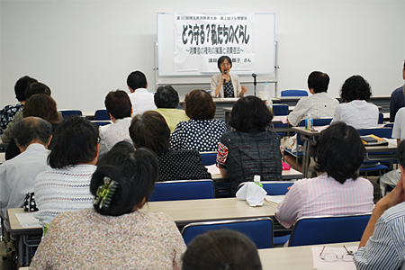

|
|
第50回埼玉県消費者大会に向けた第2回目のプレ学習会が7月14日（月）、さいたま市の浦和コミュニティセンター第15集会室で開催されました。講師に弁護士の村 千鶴子さん（東京経済大学教授・弁護士）を迎え、今日までの消費者問題の変遷と、消費者の権利の擁護の今日的な課題について、消費者法に焦点を当ててお話しいただき、84人が参加しました。  最初に村先生は、「消費者問題の歴史的変化、法律がどう制度化されてきたか。私たちがしなければならないことがたくさんあります」とし、最近の消費者被害の実情から話されました。 1．最近の消費者の被害の実情 昨年、問題となった表示問題は、「一流ホテル2014等の食材偽装から、ネット通販、予備校、医療法人に至るまで様々です。消費生活センターで扱う問題の三分の一が高齢者の被害で、悪質訪問は再び増加しており、電話など顔を合わせない特殊詐欺、金融商品の買え買え詐欺などが横行している」と話しました。法律で守られるのは法律を使える高齢者だけで、スマホ依存も消費者問題であるとし、「ネット通販トラブルは自らかかる振り込め詐欺のようなもの。オンラインゲームの被害も激増し、健康食品やエステ美容利用などは経産省の推奨もあり、被害増が想像されます」と話しました。 また、既に起きている化粧品の白斑、石鹸のアレルギー問題などは、深刻さに反し消費者安全法で対処しきれていないこと、商品先物取引の不招請勧誘禁止で被害は減少した代わりに売上も減少したため、70歳以下には廃止が検討され始め問題となっていることを指摘しました。 2．消費者問題の取り組みの大きな流れ 概ねこれまで半世紀の日本の消費者問題と法整備の歩みを振り返りました。1960年代は、高度経済成長による現代型消費者問題が社会問題となり、消費者保護基本法が制定され、90年代以降には規制緩和等での情報化・グローバル化の中、消費者契約法などが制定されました。2004年の消費者基本法の制定で消費者が権利の主体と位置づけられ、消費者庁の設置以降、消費者安全法、消費者教育推進法（具体的には地方自治体、検討の最中）が制定され、被害回復の困難さと「やり得」の克服に向け集団訴訟制度導入されたこと、不当表示防止法の課徴金制度が今後導入の見込みとなっていることに触れました。 3．どう守る？私たちのくらし それでは今後、私たちは自分たちのくらしをどのように守っていくのか、今日的な消費者問題の課題と私たちの向き合い方について話されました。 「自立した消費者とは、消費生活センターなどつながることもできます。格差の問題もあり、高齢者や若者など孤立する消費者の、人間関係や社会の連帯を回復するためにはどう下支えできるか。地域でないと出来ない取り組みがあります。「きょういくところ・きょうする用事」があるか？！不当なことはやり得にさせないこと。行政処分制度、差止制度、集合訴訟を知ることです。法律はあくまで道具であり、使うのは消費者。制度を活用し育てていくことが必要です」と締めくくりました。 |